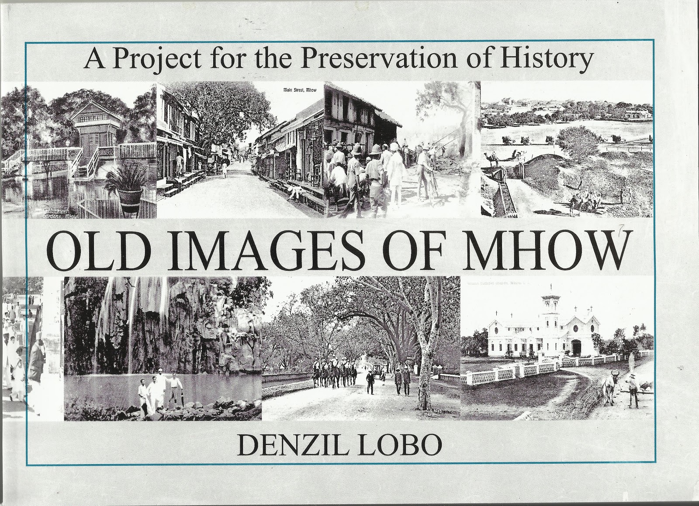
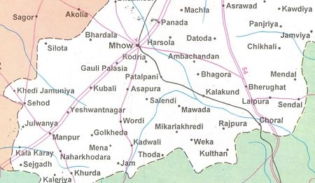
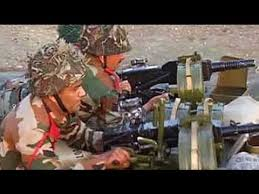
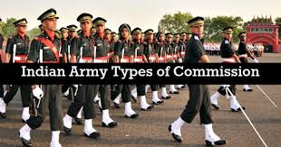

Mhow, officially known as Dr Ambedkar Nagar, is a cantonment in the Indore District in Madhya Pradesh state of India. It is located 23 kilometres (14 mi) south of Indore city towards Mumbai on the Mumbai-Agra Road. The town was renamed as Dr Ambedkar Nagar in 2003, by the Government of Madhya Pradesh.
There is total lack of unanimity on how Mhow got its name. One possible source of the name might be the Mahua (Madhuca longifolia) tree, which grows in profusion in the forests around Mhow.
Some articles in popular literature state that MHOW stands for Military Headquarters Of War. However, this is a backronym, and there is no proof to support the theory that the name of the village comes from the acronym. The village near Mhow was called Mhow Gaon in the pre-British era, when English was not used in India. The Cantonment which came up in 1818 came to be known as Mhow Cantt after the name of this village. Sir John Malcolm spelt the name of this town as MOW in his writings. The 1918 edition of Encyclopedia Britannica also mentions 'MAU'. However, the Cantonment was referred to by British officers as Mhow at least as early as the end of 1823 (letter from Lt Edward Squibb to his father in London).
In 2003, the town was renamed Dr. Ambedkar Nagar in honour of B. R. Ambedkar, who was born here. The renaming has not been without controversy. Many claim that it has been done due to the compulsions of vote bank politics. The new name is used for official purposes and has not been widely accepted.
History

This cantonment town was founded in 1818 by John Malcolm as a result of the Treaty of Mandsaur between the English and the Holkars who were the Maratha Maharajas of Indore. John Malcolm's forces had defeated the Holkars of the Maratha Confederacy at the Battle of Mahidpur in 1818. It was after this battle that the capital of the Holkars shifted from the town of Maheshwar on the banks of the Narmada to Indore.
Mhow used to be the headquarters of the 5th (Mhow) Division of the Southern Command during the British Raj. Today this small town is associated with the Indian Army and with Bharat Ratna Dr. B. R. Ambedkar an economist, philosopher, jurist, anthropologist, Buddhist activist, a revolutionary, a prolific writer and a political leader who was born here.
Mhow was a meter gauge railway district headquarters during the British Raj and even after 1947. The irony is that Mhow finally has a broad gauge connection with Indore but regular train services are yet to commence.
According to Hindu religious texts, Janapav Kuti near Mhow is said to be the birthplace of Parashurama, an avatar of Vishnu.
Demographics

As of 2011 India census, Mhow had a population of 85,023. Males constitute 54% of the population and females 46%. Mhow has an average literacy rate of 72%, higher than the national average of 59.5%; male literacy is 78%, and female literacy is 65%. The Mhow Cantt Cantonment Board has population of 81,702 of which 43,888 are males while 37,814 are females as per report released by Census India 2011.
Population of Children with age of 0-6 is 9308 which is 11.39% of total population of Mhow Cantt (CB). In Mhow Cantt Cantonment Board, Female Sex Ratio is of 862 against state average of 931. Moreover, Child Sex Ratio in Mhow Cantt is around 908 compared to Madhya Pradesh state average of 918. Literacy rate of Mhow Cantt city is 85.78%; higher than state average of 69.32%. In Mhow Cantt, Male literacy is around 90.42% while female literacy rate is 80.37%.
Cantonment
As early as 1818, the Indian Army has had a presence in Mhow. Up until World War II, Mhow was the headquarters of the 5th Division of the Southern Army. According to local legend, Winston Churchill also spent a few months in Mhow when he was a subaltern serving with his regiment in India. The house on the mall where he is supposed to have lived, gradually crumbled due to neglect and age. It was pulled down and a jogger's park has been built on its grounds by the Infantry School.
Mhow houses three premier training institutions of the Indian Army; The Infantry School, The Military College of Telecommunication Engineering (MCTE) and The Army War College.
In addition to these institutes, Mhow is where Army Training Command or ARTRAC was born. ARTRAC was based in Mhow from 1991 to 1994, before it shifted to Shimla (Himachal Pradesh). At that time its General Officer Commanding in Chief (GOC-in-C) was Lt. General Shankar Roy Chowdhary who went on to become the Chief of Army Staff (COAS). Its first GOC-in-C was Lt. General A.S. Kalkat who had earlier commanded the Indian Peace Keeping Force (IPKF) in Sri Lanka. ARTRAC was housed in the campus of the present Army School. This was used as All Arms Wing of MCTE for many decades. It was originally built and used as the British Military Hospital (BMH).
The Infantry School

The Infantry School is a training establishment of the Indian Army. It is responsible for the training of officers and infantry. The Commando Wing of this school is in Belgaum, Karnataka. The Army Marksmanship Unit (AMU) is a part of the Infantry School and has produced many medal winning shooters. Field Marshal Sam Manekshaw was the first Indian Commandant of this school in 1955-56 when he was a Brigadier.
Military College of Telecommunication Engineering (MCTE)

The first training institution in Mhow, MCTE was known as the School of Signals till 1967. It is the alma mater of the Corps of Signals. MCTE conducts telecommunications and information technology courses for officers, JCOS, NCOs and soldiers of the Indian Army. Officers and men from other countries also attend courses there. It also trains gentlemen cadets for a bachelor's degree in engineering at the Cadets Training Wing (CTW). On completion of their training, most of the cadets get commissioned into the Indian Army's Corps of Signals, however, some are also commissioned into other branches.
The Army War College
Army War College, Mhow (AWC) is a tactical training and research institution of the Indian Army. It develops and evaluates concepts and doctrines for tactics and logistics. The college trains about 1,200 officers, as well as paramilitary forces each year.
The college was originally established as the College of Combat at Mhow on April 1, 1971. It was spun out of the Infantry School, Mhow. It continued to operate from the campus of the Infantry School until 1988, when the college moved to its new campus. In 2003, the college was renamed as the Army War College, Mhow.
The College mainly conducts three courses : the Junior Command (JC) course, the Senior Command (SC) course and the Higher Command (HC) course. The former Chiefs of Army Staff (COAS) General K. Sundarji and General V. N. Sharma have served as the Commandant of the College. The present commandant is Lt Gen Rajeev Tewari, PVSM, AVSM.
Tourism
1. Patalpani waterfall 2. Mehndi Kund Water Fall 3. Choral Dam 4. Nakheri Dam 5. Berchha Dam 6. Tinchha Water Fall 7. Janapav hill Temple
8. Jaam Gate
9. Bamniya Kund Water Fall
10. Sitla Mata Water Fall in Manpur
11. Kala Kund
12. Choral River
13. Raj Mahal of Raja Rajendra Singh Solanki
14. Wanchoo Point